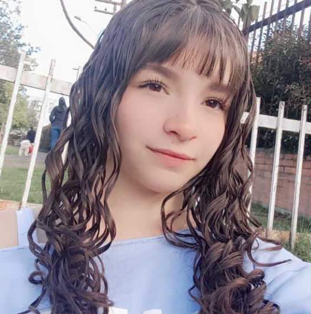

Perfil del Aprendiz

Hola, soy Sofía
Aprendiz SENA - ADSOEstudiante apasionada por el desarrollo de software, la creación de soluciones digitales con impacto social y la arquitectura de bases de datos. Me motiva transformar ideas en plataformas funcionales y accesibles.
Intereses tecnológicos: Desarrollo web frontend, modelado de sistemas (UML), bases de datos SQL/MySQL, Python y Java.
Mi idea de proyecto
HopePets es la plataforma que quiero convertir en un emprendimiento digital: un espacio para dar visibilidad a mascotas con discapacidad o movilidad reducida y conectarlas con personas que quieran ayudar.
Conocer el proyectoMi formación: Sitio oficial del SENA ↗